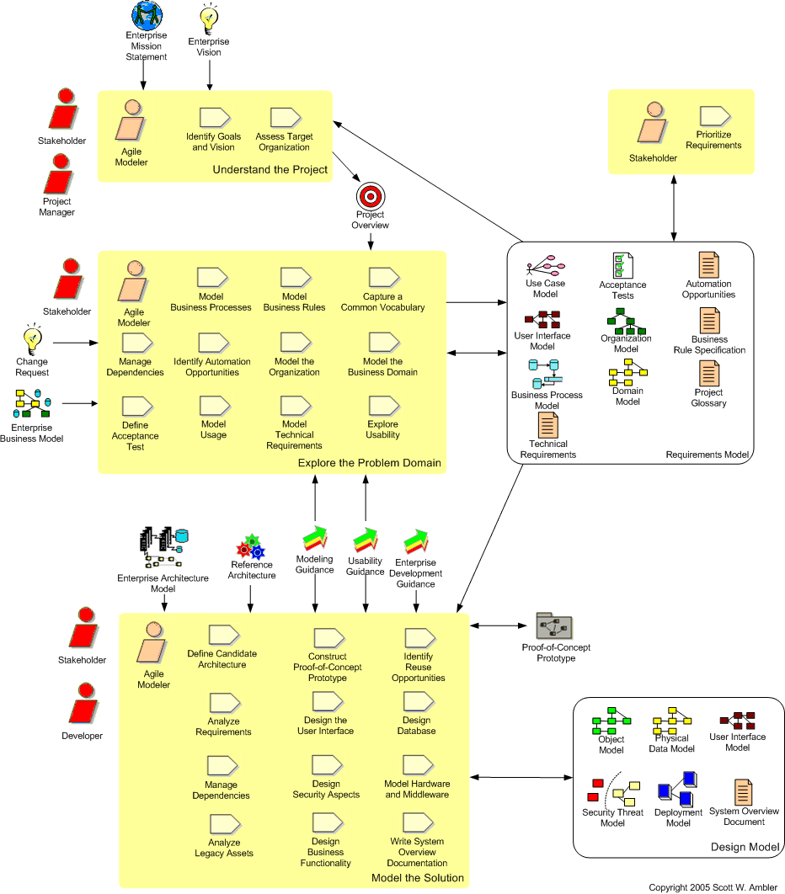
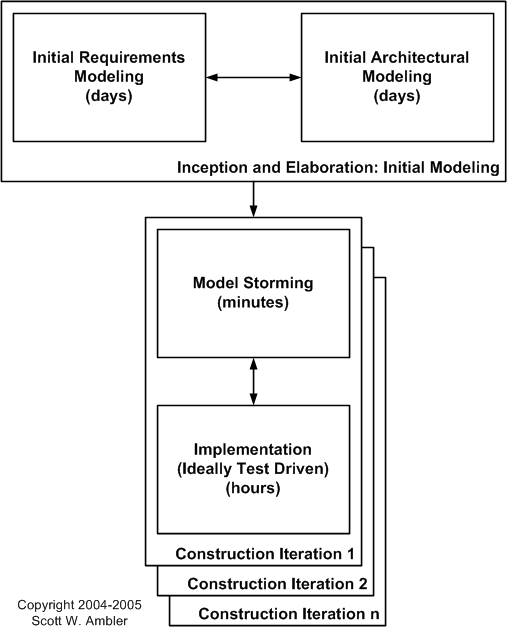

The Model Discipline
| Home | Phases | Disciplines | Milestones | Roles | Deliverables | Guidance | Help |
|
|
The Model Discipline |
|
||||||||
|
||||||||||
The goal of this discipline is to understand the business of the organization, the problem domain being addressed by the project, and to identify a viable solution to address the problem domain.

Figure 1. The Agile Model Driven Development (AMDD) lifecycle (modified).

| Phase | Activities |
| Inception |
Initial, high-level requirements modeling
(see Figure 1). Your stakeholders
should
actively participate in the development of a high-level requirements
model which defines the initial scope for the project and provides
sufficient information for a rough
estimate. You should consider:
Initial, high-level architectural modeling (see Figure 1). Your goal is to identify a viable architectural strategy, critical input into the project planning activity as well as into your implementation efforts. The best way to work is to get several technical people, including some if not all of the developers, together in a room to develop an architectural strategy as you're talking around a plain-old-whiteboard (POW) creating free-form diagrams and perhaps some form of initial deployment model. |
| Elaboration | Identify technical risks. Your requirements work
products,
in particular your use cases and technical requirements, will reveal
potential technical risks to your project. These risks may include
the introduction of new technology to your organization, a new use of
existing technologies, significant load/stress on your application, or
interfacing to external/legacy systems. The highest priority risks should be
addressed by your implementation efforts
in the development of an end-to-end skeleton of the system. Architectural modeling. As you build the architectural prototype you will need to model storm some details to to think through portions of the architecture. User interface prototyping. In parallel to the development of the architectural prototype you should also consider user interface prototyping of several major screens. You don't want to do too much prototyping because your requirements are likely to change and therefore your work will need to be discarded. Your goal at the time should be to understand the main screens/pages of your user interface, with the understanding that they will change during Construction, and to identify the basic "look and feel" of your system. |
| Construction |
Analysis model storming.
During Construction iterations you will need to work closely with your
project stakeholders to understand their needs on a just-in-time (JIT)
basis. Important issues:
Design model storming. During Construction iterations your goal is to do just enough modeling to think through the design of a single requirement, or portion thereof, before implementing the requirement. Agile modelers model directly with developers, they don't simply hand off models to them, and often take on the role of developer. You will likely want to create:
Document critical design decisions. As you make design decisions you should consider recording any that don't seem obvious, or that you believe someone else in the future would really like to know, as a start to your system overview documentation. |
| Transition |
Model storming.
You will need to do some JIT modeling to try to understand the root
cause of a defect. Finalize system overview documentation. The best time to finalize your system overview documentation is during this phase when the scope of your system has truly stabilized. Use your critical design decisions, if you documented them during Construction, as the base from which to build this document. Other important information that you'll want in this document is a summary of the scope of the system and critical architecture diagrams (now might be the time to turn those free-form whiteboard sketches into nice looking diagrams using a drawing tool). |
 |
Page last updated: May 13, 2006 This page is tailored with permission from Ambysoft Inc.'s Agile UP Product Original page is Copyright © 2005-2006 Ambysoft Inc. |